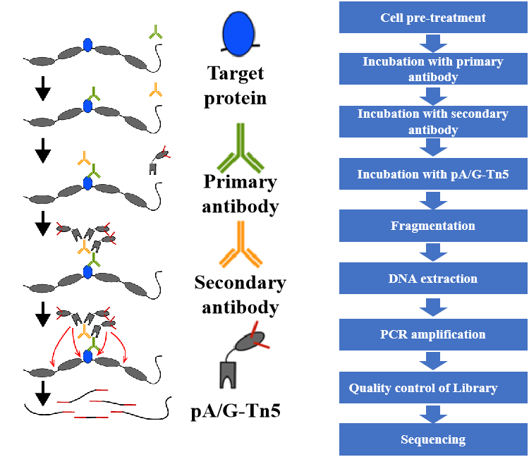
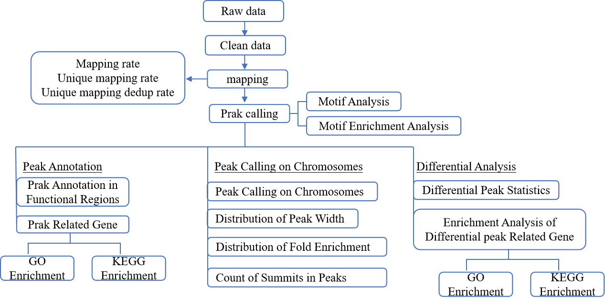
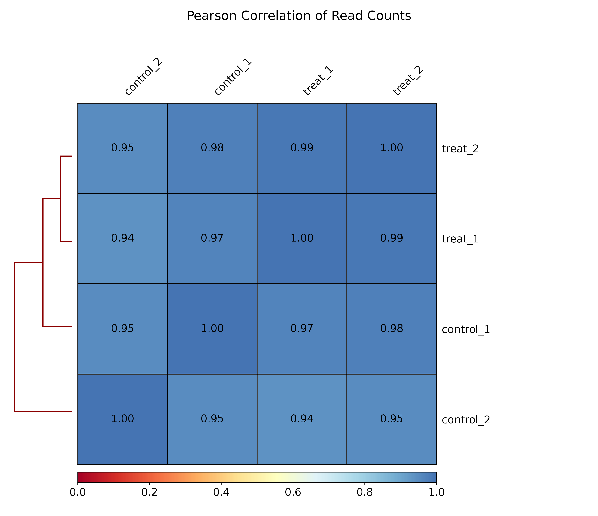
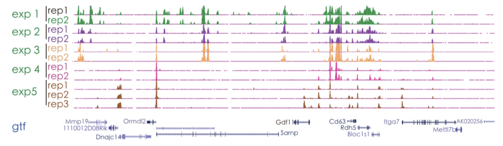

Cleavage Under Targets and Tagmentation with high-throughput sequencing (CUT&Tag) Analysis Report
| Contract ID | XXXXSCXXXXXXXX-Z01-J001 |
| Contract Name | XXX合同 |
| Batch ID | XXXXSCXXXXXXXX-Z01-J001 |
| Reference Genome and Version | |
| Report Time | 2025-12-22 |
I.Background
CUT&Tag technology is an innovative method for studying protein-DNA interactions. Its core step is "Cleavage Under Targets and Tagmentation" . This technology has several advantages, including low input requirements for cells or tissues, high signal-to-noise ratio, and good reproducibility. It is especially suitable for research fields such as early embryonic development, stem cells, cancer, and epigenetics.
II.Experimental Procedure
The CUT&Tag technology consists of two major parts: the initial CUT&Tag experiment and the subsequent sequencing analysis. Every step, from sample acquisition to preliminary experimental processing and library construction for sequencing, can impact the quality and quantity of the data. Obtaining high-quality sequencing data is a prerequisite and guarantee for accurate bioinformatics analysis in the later stages. To ensure the accuracy and reliability of the sequencing data from the very beginning, Novogene strictly controls every experimental step, including sample testing, library construction, and sequencing, thereby fundamentally ensuring the production of high-quality data.

Library construction workflow[1]
1 Library Preparation for Sequencing
Construct the library according to the workflow diagram: ConA magnetic beads are used to adsorb cells or nuclei, and digitonin is applied to increase the permeability of the cell membrane. The pA-Tn5 transposase, guided by the antibody, precisely binds to the DNA sequences near the target protein and simultaneously adds sequencing adapters to both ends. The library construction is completed through PCR amplification. After the PCR reaction, the library is purified using AMPure beads.
2 Quality control of Library
Novogene's library quality control mainly includes two methods：
(1) Agilent 2100 is used to assess the integrity of library DNA fragments and the size of the insert fragments.
(2) qPCR is employed to determine the effective concentration of the library.
Novogene performs Agilent 2100 and qPCR tests on the self-constructed libraries. Only libraries that pass the quality control are subjected to the next step of sequencing.。
3 Sequencing
After passing the library quality control, different libraries are pooled according to their effective concentrations and the required sequencing data output, and then subjected to Illumina sequencing.
III. Bioinformatic analysis results
The bioinformatic analysis workflow of raw sequencing data is shown as follows:

1.1 Data Quality Control
When publishing a paper, the raw sequencing data is generally required to be uploaded to public databases, such as the GEO or SRA databases at NCBI. Therefore, please properly preserve the raw sequencing data.
1.1 FastQC（Raw_reads）
The location of the result file is 1. QC/1.1 FastQC_raw
Data quality control is a crucial step in the process of gene sequencing. Its main purpose is to ensure the reliability and accuracy of the data obtained from samples by avoiding errors and contaminants during sequencing. FastQC is a commonly used software for data quality assessment [2]. Using FastQC, we conducted a basic statistical analysis of the quality of the raw sequencing data (raw reads), and the results are as follows:
Figure 1-1 raw reads of FastQC
Top-left: The horizontal axis represents position, and the vertical axis represents quality. Colors distinguish different quality segments. If the majority of base quality values are above 20, it indicates good sequencing quality; if they are above 30, it indicates excellent sequencing quality.
Top-middle: The horizontal axis represents position, and the vertical axis represents the percentage of bases. The start of the sequence is connected to the sequencing primer adapter, so there will be some fluctuation in A, C, G, and T at the beginning, which will stabilize later.
Top-right: Distribution of read lengths.
Bottom-left:Distribution of the average GC content of reads. The red line represents the actual situation, and the blue line represents the theoretical distribution.
Bottom-middle: Adapter content. The horizontal axis represents the base position, and the vertical axis represents the percentage of adapter content at each base position.
Bottom-right: The horizontal axis represents the number of duplications (multiple reads mapping to the same position), and the vertical axis represents the number of duplicated reads corresponding to each duplication count.
1.2 Raw Data Trimming
The location of the result file is 1.QC/1.0QC_Summary.xls
The primary purpose of data filtering is to remove low-quality data and ensure the quality of clean data. We use the trim method for data processing, and all subsequent analyses are based on clean data. During the trimming of raw data, we use the fastp software [3] to process the data as follows:
(1) Remove reads with more than 40% bases having a quality value less than 15.
(2) Remove reads with more than 6 bases as N.
(3) Remove adapter sequences.
(4) Discard reads shorter than 15bp after trimming.
Table 1-1 Summary of raw data quality control
| Sample | Raw_reads | Raw_bases(G) | Clean_reads | Clean_bases(G) | Clean_ratio | GC_content | Q20_clean | Q30_clean | Low_quality | Too_many_N | Too_short | Trimmed_with_adapter |
|---|---|---|---|---|---|---|---|---|---|---|---|---|
| control_1 | 23044224 | 6.91 | 22903724 | 5.72 | 82.78% | 48.92% | 99.35% | 96.91% | 139012 | 1141 | 347 | 7038705 |
| control_2 | 21969337 | 6.59 | 21820494 | 5.83 | 88.47% | 52.92% | 99.27% | 96.67% | 144230 | 4079 | 534 | 3711824 |
| treat_1 | 23157334 | 6.95 | 23025737 | 5.53 | 79.57% | 49.35% | 99.35% | 96.98% | 126737 | 4542 | 318 | 8993717 |
| treat_2 | 23016734 | 6.91 | 22880657 | 5.66 | 81.91% | 49.00% | 99.35% | 96.97% | 131454 | 4297 | 326 | 7567475 |
（1）Sample: Sample name
（2）Raw_reads: The number of raw read pairs, representing the total count of sequencing read pairs before any processing.
（3）Raw_bases: The total number of bases in the raw sequencing data, representing the sum of all nucleotides in the raw reads.
（4）Clean_reads: The number of read pairs retained after trimming, representing the count of high-quality read pairs remaining after filtering.
（5）Clean_bases: The total number of bases in the retained reads after trimming, representing the sum of nucleotides in the clean reads.
（6）Clean_ratio: The percentage of Clean_bases relative to Raw_bases, indicating the proportion of high-quality data retained.
（7）GC_content: The percentage of the total number of bases that are G and C, representing the proportion of guanine (G) and cytosine (C) nucleotides in the sequence.
（8）Q20_clean: The percentage of bases with a Phred quality score greater than 20 in the filtered data, indicating the proportion of bases with a high probability of being correct.
（9）Q30_clean: The percentage of bases with a Phred quality score greater than 30 in the filtered data, representing an even higher confidence level in the accuracy of these bases
（10）Low_quality: Read pair with more than 40% of bases having a Phred quality score less than 15, indicating reads with a significant proportion of low-quality bases.
（11）Too_many_N: The number of read pair with more than 6 bases as N, representing reads with a high number of ambiguous nucleotides.
（12）Too_short: The number of read pair discarded due to being shorter than 15bp after trimming, representing reads that are too short for reliable analysis.
（13）Trimmed_with_adapter: The number of raw read pair containing adapter sequences, representing reads that were trimmed due to the presence of adapter contamination.
1.3 FastQC（Clean_reads）
The location of the result file is 1.QC/1.2FastQC_clean
The data obtained after trimming (clean reads) were subjected to quality statistics again, with the following results:
Figure 1-2 Clean_reads of FastQC
Top-left: The horizontal axis represents position, and the vertical axis represents quality. Colors distinguish different quality segments. If the majority of base quality values are above 20, it indicates good sequencing quality; if they are above 30, it indicates excellent sequencing quality.
Top-middle: The horizontal axis represents position, and the vertical axis represents the percentage of bases. The start of the sequence is connected to the sequencing primer adapter, so there will be some fluctuation in A, C, G, and T at the beginning, which will stabilize later.
Top-right: Distribution of read lengths.
Bottom-left:Distribution of the average GC content of reads. The red line represents the actual situation, and the blue line represents the theoretical distribution.
Bottom-middle: Adapter content. The horizontal axis represents the base position, and the vertical axis represents the percentage of adapter content at each base position.
Bottom-right: The horizontal axis represents the number of duplications (multiple reads mapping to the same position), and the vertical axis represents the number of duplicated reads corresponding to each duplication count.
2 Mapping
2.1 Summary of Mapping
The location of the result file is 2.Mapping/2.0Mapping_summary.tsv
We utilized BWA (Burrows Wheeler Aligner)[4-6]for the alignment analysis of CUT&Tag data against the reference genome. Unique alignment ensures that the alignment and subsequent analysis results are more reliable, allowing for more accurate identification of various functional elements within the genome. Therefore, in the subsequent analysis of CUT&Tag, all analyses are based on uniquely aligned reads. The statistics of the alignment results are as follows:
By default, the parameters “-k 32 -T 30” were used for the alignment of non_MT/PT data.
Table 2-1 Summary of mapping
| Sample | Clean_reads | Mapped | Unique_mapped |
|---|---|---|---|
| treat_1 | 23025737 | 22445039(97.48%) | 21342682(95.09%) |
| control_1 | 22903724 | 22331460(97.50%) | 21470145(96.14%) |
| control_2 | 21820494 | 21448015(98.29%) | 20718695(96.60%) |
| treat_2 | 22880657 | 22128794(96.71%) | 21113407(95.41%) |
(1) Sample: Sample name
(2) Clean_reads: The number of read pairs retained after trimming
(3) Mapped: The number of reads that have been aligned (The percentage in parentheses represents the proportion of Mapped reads relative to Clean reads)
(4) Unique_mapped: The number of reads that have a unique alignment position in the reference sequence (The percentage in parentheses represents the proportion of Unique_mapped reads relative to Mapped reads)
2.2 Mapping Quality Statistics
The location of the result file is 2.Mapping/2.1MAPQ_stat
MAPQ (Mapping Quality) refers to the reliability of a read's alignment to a specific position in the reference sequence, expressed as the probability of incorrect alignment: MAPQ = -10log10(P), where P is the probability of incorrect alignment. Therefore, when MAPQ is 13, the corresponding P is 0.05, meaning that the probability of incorrect alignment for that read is 0.05.
Here, incorrect alignment is assumed to be non-unique alignment. A lower MAPQ value indicates a higher probability of incorrect alignment. In CUT&Tag analysis, we select reads with a MAPQ greater than 13 as uniquely aligned reads for subsequent analysis.
Figure 2-1 Distribution of MAPQ
Horizontal axis is MAPQ, vertical axis is the reads count.
2.3 Genome-wide Distribution of the Mapped Reads
The location of the result file is 2.Mapping/2.2Reads_on_chromosome_distribution
We have analyzed the density of total mapped reads aligned to each chromosome (divided into positive and negative strands) in the genome. As shown in the figure below, the specific method used for plotting involves using a sliding window (window size) of 1 kb to calculate the number of reads aligned to base positions within the window, and then converting this number to log10. Under normal circumstances, the longer the chromosome, the more reads will be mapped to it [7]. The relationship between the number of reads mapped to each chromosome and the chromosome length can be more intuitively observed from the graph depicting this correlation.
Figure 2-2 Genome wide distribution of the mapped reads
Horizontal axis is Position on the chromosome，vertical axis is Number of reads aligned to a 1-kb window
2.4 Distribution of the Reads Mapped to TSS
The location of the result file is 2.Mapping/2.3Reads_on_TSS
Using the computeMatrix module of the deepTools software, we analyzed the CUT&Tag signal within a 3-kb region upstream and downstream of the transcription start site (TSS). The entire region was divided into bins with a window size of 50 bp, and the average signal intensity for each bin was calculated based on the number of reads within each bin. The average signal distribution across the 3-kb region upstream and downstream of the TSS for each sample is shown in the figure below:
Figure 2-3 Distribution of the reads mapped to TSS
Line Plot: Horizontal axis is the position of reads relative to the TSS (Transcription Start Site)，vertical axis is the density of reads.
Clustered Heatmap: Horizontal axis is the position of reads relative to the TSS，vertical axis is the clustering results of read signals for each region.
2.5 Distribution of the Reads Mapped to the Gene Body
The location of the result file is 2.Mapping/2.4Reads_on_gene_body.
The CUT&Tag signal in the 3kb region upstream and downstream of the gene body was analyzed using the plotProfile module of the deepTools software [8]. The specific process is as follows: The entire region was divided into bins with a window size of 50bp, and the average signal intensity in each bin was calculated based on the read counts. The average signal distribution in the 3kb region upstream and downstream of the gene body for each sample is shown in the figure below:
Figure 2-4 Distribution of the reads mapped to gene body
Line Plot:Horizontal axis is the position of reads relative to the gene body，vertical axis is the read density (the number of reads in each bin divided by the total number of reads in the sample).
Clustered Heatmap: Horizontal axis is the position of reads，vertical axis is the clustering results of read signals for each region.
2.6 Sample Correlation Detection
The location of the result file is 2.Mapping/2.5Pearson_correlation
Biological replicates are essential for any biological experiment, and high-throughput sequencing technologies are no exception [9]. Biological replicates serve two main purposes: one is to demonstrate that the biological experimental procedures involved are reproducible and have minimal variation, and the other is to ensure that the subsequent differential gene expression analysis yields more reliable results. Analysis of sample correlation is an important indicator for assessing the reliability of experiments and the rationality of sample selection. The closer the correlation coefficient is to 1, the higher the similarity in expression patterns between samples.

Figure 2-5 Pearson test among samples
The heatmap of the correlation coefficients between samples, where the intensity of the color represents the magnitude of the correlation coefficient (Pearson correlation coefficient).
2.7 Visualization of Pileup Signal
We provide the alignment results of reads on the genome in the bw format, as well as the reference genome and annotation files for the corresponding species. We recommend using the IGV (Integrative Genomics Viewer) browser to visualize the bw files (the visualization diagram is shown in Figure 2-6).
The IGV browser has the following features:
(1) It can display the positions of single or multiple reads on the genome at different scales, including the distribution of reads on each chromosome and in annotated exons, introns, splice junctions, and intergenic regions.
(2) It can display the read abundance in different regions at different scales to reflect the degree of chromatin accessibility in those regions.
(3) It can display gene and splice variant annotation information.
(4) It can display other annotation information.
(5) It can download various annotation information from remote servers and also load annotation information from local files.

Figure 2-6 Visualization of pileup signal by IGV(demo)
3 Fragment Size Prediction
The location of the result file is 3.Frag_size
The enzyme-cleaved fragment (insert size) refers to the DNA fragment obtained after digestion by transposase in the CUT&Tag experiment. However, in the academic terminology of CUT&Tag, insert size is referred to as fragment size, which is why fragment size is used in the filenames and images generated by this analysis. For a specific binding site, reads will show significant enrichment at the binding site. For paired-end sequencing, we used the ATACseqQC software[18] to predict frag_sizes from the alignment results.
Due to the presence of nucleosomes that form a protective structure and prevent digestion by transposase, the length of sequencing reads will exhibit a periodic distribution of approximately 200 bp. These fragments contain one or more nucleosomes, and it is normal for the proportion of fragments with one or more nucleosomes to vary, which also reflects the characteristics of the sample itself.
3.1 Display of Insert Fragment Length
Figure 3-1 Distribution of Insert Fragment Length
Horizontal axis is the predicted insert fragment length，vertical axis is the density value
4 Peak Calling
Significantly enriched regions of reads aligned to the reference genome are identified through statistical methods. These regions are referred to as Peaks. After identifying the Peaks, they can be annotated to obtain nearby genes (which are potentially regulated genes). Functional enrichment analysis can then be performed on genes associated with Peaks to further explore the data of interest.
4.1 Summary of Peak Calling
The location of the result file is 4.Peak/4.0Peak_Summits_stat.xls
The Peak detection analysis (Peak calling) based on uniquely aligned reads was completed using the MACS2 software[10].
After Peak detection, statistics were compiled on the number, width, and distribution of Peaks, and genes associated with Peaks were screened. The results are as follows:
Table 4-1 Summary of peak calling
| Sample | Count_of_narrow_Peak | FRiP | Count_of_Summits |
|---|---|---|---|
| control_1 | 88369 | 31.1028% | 104364 |
| control_2 | 79103 | 31.7270% | 98516 |
| treat_1 | 74819 | 32.4718% | 90752 |
| treat_2 | 75368 | 29.5609% | 91074 |
(1) Sample: The name of the sample.
(2) Count_of_narrow_Peak: The number of Peaks (default is narrow Peak).
(3) FRiP (fraction of reads in Peaks): The percentage of reads in Peaks relative to the total number of aligned reads. FRiP can intuitively reflect the effectiveness of the experiment, and generally, the value of FRiP is proportional to the number of Peaks.
(4) Count_of_Summits: The number of Summits. Some Peaks may be merged together due to their proximity, thus containing multiple Summits.
4.2 Genome Wide Distribution of Peaks
The location of the result file is 4.Peak/4.2Peak_on_chromosome_distribution
Based on the locations of the identified Peaks, we have analyzed the distribution of Peaks across chromosomes. The number and distribution of Peaks on each chromosome can reflect the distribution of open chromatin regions. The distribution plot is shown as follows:
Figure 4-1 Genome wide distribution of peaks
Horizontal axis is the coordinates of Peaks on the chromosomes，vertical axis is the chromosomes. Each blue line represents a single Peak
4.3 Distribution of Peak Width
The location of the result file is 4.Peak/4.3Peak_width_distribution
The distribution of Peak widths is shown in the figure below:
Figure 4-2 Distribution of peak width
Horizontal axis is the width of the Peaks (in nucleotides)，vertical axis is the number of Peaks corresponding to each width.
4.4 Distribution of Fold Enrichment
The location of the result file is 4.Peak/4.4Peak_qvalue_distribution
The significance of a Peak is an indicator of its reliability. The significance (q-value) of each Peak is calculated based on the number of reads and using models such as the Poisson distribution [10]. The distribution of Peak significance is shown in the figure below:
Figure 4-3 Distribution of fold enrichment
Horizontal axis is the -log10(q-value) of the Peaks，vertical axis is the number of Peaks.
4.5 Signal Distribution Around Summits
The location of the result file is 4.Peak/4.5Summits_distribution
The CUT&Tag signal in the 3kb region upstream and downstream of the Peak Summits was analyzed using the computeMatrix module of the deepTools software. The specific process is as follows: The entire region was divided into bins with a window size of 50bp, and the average signal intensity in each bin was calculated. The average signal distribution in the 3kb region upstream and downstream of the Summits for each sample is shown in the figure below:
Figure 4-4 Distribution of Reads in the 3kb Region Upstream and Downstream of Peak Summits
Line Plot: Horizontal axis is the position of reads relative to the Peak Summit，vertical axis is the read density.
Clustered Heatmap: Horizontal axis is the position of reads relative to the Peak Summit，vertical axis is the clustering results of read signals for each region.
4.6 Distribution of Summits Relative to Peaks
The location of the result file is 4.Peak/4.6Summits_in_Peak_position_distribution
All Peaks were divided equally into 100 segments, and the distribution of Summits within these 100 segments was analyzed. Generally, Summits are located in the middle of the Peaks [11]. The distribution is shown in the figure below:
Figure 4-5 Distribution of Summits Relative to Peaks
Horizontal axis is the position of Summits, vertical axis is the number of Summits
4.7 Distribution of Summits Relative to the TSS
The location of the result file is 4.Peak/4.7Summits_in_TSS_distribution
The distribution of Summits relative to the Transcription Start Site (TSS) of genes can predict the degree of openness around the TSS. We used PeakAnnotator [12] to identify the nearest TSS for each Summit. By calculating the distance between each Summit and its nearest TSS, we analyzed the distribution of Summits relative to TSS. The resulting graph is shown below:
Figure 4-6 Distribution of Summits Relative to Gene Positions
Horizontal axis is the distance from the Summit to the TSS, vertical axis is the number of Summits.
5. Peak Annotation
The location of the result file is 5.Annotation/5.0Peak_annotation_stat
Annotating the identified Peaks aims to explore the target genes of transcription factors or histone modifications. Genes that overlap with Peaks and those located near Peaks are both potential targets regulated by transcription factors or histone modifications. Identifying and annotating these genes helps to study the functions or metabolic pathways regulated by the target proteins.
Based on the genes overlapping with Peaks and those near Peaks, two major annotation tables for Peak-related genes are generated: 1. narrow_Peaks_ChIPseeker_annotation.xls, which contains the annotation information for genes associated with narrow Peaks; 2. Summits_ChIPseeker_annotation.xls, which contains the annotation information for genes associated with Summits. Since Peaks may be merged due to their proximity, a single Peak can contain multiple Summits.
Note: Potential target gene prediction (result file location: 5.Annotation/5.0Peak_annotation_stat/*/*genes_with_Peak.txt): Based on the annotation analysis results (Summits_ChIPseeker_annotation/narrow_Peaks_ChIPseeker_annotation), the column "genename" is used to filter the desired potential target genes.
5.1 Distribution of Peaks in Functional Regions
The location of the result file is 5.Annotation/5.1narrow_Peaks_plotAnnoPie
The distribution of Peaks in various functional regions was analyzed using the ChIPseeker software. The assignment of Peaks to functional regions follows a specific priority order: promoter, 5'UTR, 3'UTR, Exon, Intron, Downstream, and Intergenic. For example, if a Peak overlaps with both an exon of one gene and an intron of another gene, it will be annotated as an exon according to the priority order.
Generally, most transcription factor binding sites or histone modification sites are located in the promoter regions.
Figure 5-1 Distribution of Peaks in Gene Functional Regions
The figure shows the statistical distribution of Peaks in different functional regions
6. Differential Analysis
The location of the result file is 6.Diffrience/6.0Peak_Diffrience/p>
CUT&Tag experiments typically involve multiple sample groups to study specific chromatin accessibility regions under different developmental stages or cellular states. By identifying differential Peaks between samples, we can pinpoint DNA-protein interaction regions that are specific to certain conditions, thereby uncovering potential target genes that are specifically regulated. This analysis helps to infer whether epigenetics plays a role in development and disease, facilitating subsequent mechanistic studies.
The RPM (Reads Per Million) values of Peak regions in each experimental group are calculated (the proportion of reads enriched in Peak regions out of every million reads). A Peak is considered differentially enriched if the RPM ratio between groups is greater than 2 (by default, during differential analysis, the Peaks from all biological replicates of all comparison groups are pooled together). Differential Peaks are identified and annotated to infer differences in DNA-protein interactions under different treatment conditions. Differential analysis between experimental groups can only be performed when there are at least two experimental groups. Differential binding regions are used to identify and annotate related genes.
6.1 Differential Peak Statistics
The location of the result file is 6.Diffrience/6.1Diffrience_overlap_of_Peak
Figure 6-1 Venn Diagram of Differential Peaks Between Comparison Groups
The figure shows the number of Peaks for the comparison groups (e.g., A vs. B). Different colors represent different comparison groups (A or B). The sum of the numbers in the Venn diagram represents the total number of Peaks for that comparison group. The single-colored sections indicate the number of Peaks unique to each comparison group, while the overlapping section represents the number of Peaks shared between the two comparison groups.
6.2 Analysis of Peak Enrichment Levels in Different Samples
The location of the result file is 6.Diffrience/6.2Diffrience_RPM_in_Peak
The RPM values of Peaks (the proportion of reads enriched in Peak regions out of every million reads) from different samples were used for clustering analysis. This approach helps to determine the enrichment patterns of the same Peak across different samples or the enrichment differences of different Peaks within the same sample. Based on the RPM values from different samples, hierarchical clustering analysis was performed. Different colored regions represent different clustering groups (for example, if there are more than 10,000 differential Peaks, the top 10,000 Peaks are selected by default for heatmap visualization).
Figure 6-2 Analysis of Peak Enrichment Levels Across Samples
The upper figure is a correlation clustering map of Peaks among different samples in the comparison group
The lower figure shows the correlation between different samples in the comparison group.
6.3 Read Density Distribution in Peak Regions Within Comparison Groups
The location of the result file is 6.Diffrience/6.3Diffrience_boxplot
The RPM values (the proportion of reads enriched in Peak regions out of every million reads) for each sample in the Peak regions were calculated. A boxplot was used to display the enrichment of reads in the Peak regions across different samples.
Figure 6-3 Boxplot of RPM Values for Different Samples Within Comparison Groups
Horizontal axis is different samples, vertical axis is the log2(RPM).The boxplot allows for a direct comparison of the Peak situations across various samples.
6.4 RPM Scatter Plot for Peak Comparisons in Combined Experiments
The location of the result file is 6.Difference/6.4Difference_RPM_per_Peak
The RPM values for each comparison group in the Peak regions were calculated (if there are biological replicates, the RPM values of the biological replicate samples are averaged), and the results are displayed in a scatter plot.
Figure 6-4 Scatter Plot of RPM for Peak Comparisons in Combined Experiments
The Horizontal axis and vertical axis represent the RPM values of Peaks for different groups, respectively. Each point on the scatter plot represents a single Peak. By examining the RPM values of Peaks in the comparison groups, it is possible to clearly determine the enrichment levels in both groups (for example, if most Peak coordinates are biased towards one group, it indicates that the Peaks are more highly enriched in that group).
7. Enrichment Analysis
The analysis of high-throughput data can yield numerous candidate results. However, simply listing these results in a flat manner is not conducive to uncovering the underlying essence of the matter. Therefore, to gain a clearer understanding of the functions of these genes, we conducted enrichment analysis. By using enrichment analysis, we can summarize the seemingly chaotic differentially expressed genes into a more comprehensive statement that reflects the overall event. For example, “The TP53 signaling pathway is associated with the occurrence of gastric cancer,” rather than saying “The occurrence of gastric cancer is related to these seven genes: BAX, BID, ABL1, ATM, BCL2, BOK, and CDKN1A.”
7.1 GO Enrichment Analysis
The location of the result file is 7.Enrichment_analysis/7.1Peak_GO
Gene Ontology (GO, http://www.geneontology.org/) [13] is an international standard classification system for gene functions. GO is divided into three parts: Molecular Function, Biological Process, and Cellular Component. Genes or proteins can be associated with corresponding GO numbers through ID mapping or sequence annotation methods, and these GO numbers can be linked to Terms, which represent functional categories or cellular locations. By combining the Peak/DE (Differentially Expressed) Peak annotation results with the GO database, we can determine the primary associations of our target genes in terms of Cellular Component (CC), Molecular Function (MF), and Biological Process (BP).
Through GO functional annotation of Peak-related genes, we aim to uncover the functional pathways corresponding to important genes, in order to identify functional pathways that are relevant or consistent with the research objectives, or to reveal the potential functions of Peak-related genes. The GO enrichment results for Peak-related genes are as follows:
Table 7-1 peak related gene GO enrichment
| GO | Description | Term_type | Overrepresented_pvalue | Corrected_pvalue | Gene_item | Gene_list | Bg_item | Bg_list |
|---|---|---|---|---|---|---|---|---|
| GO:0003824 | catalytic activity | molecular_function | 1.7411e-14 | 2.8397e-11 | 2262 | 7709 | 3211 | 12196 |
| GO:0043167 | ion binding | molecular_function | 6.1701e-12 | 6.709e-09 | 1530 | 7709 | 2087 | 12196 |
| GO:0043168 | anion binding | molecular_function | 8.6867e-12 | 7.084e-09 | 911 | 7709 | 1209 | 12196 |
| GO:0036094 | small molecule binding | molecular_function | 1.9906e-10 | 1.2987e-07 | 916 | 7709 | 1227 | 12196 |
| GO:0005515 | protein binding | molecular_function | 8.7792e-20 | 2.8638e-16 | 2053 | 7794 | 2765 | 12196 |
| GO:0003824 | catalytic activity | molecular_function | 5.3988e-16 | 8.8054e-13 | 2295 | 7794 | 3211 | 12196 |
(1) GO： The unique identifier information in the Gene Ontology database;
(2) Description： The descriptive information of the Gene Ontology function;
(3) Term_type：The category of the GO term (cellular_component: cellular component; biological_process: biological process; molecular_function: molecular function)；
(4) Over_represented_pvalue： The statistical significance level of the enrichment analysis;
(5) Corrected_pvalue：The adjusted p-value, usually when padj < 0.05, the function is considered enriched;
(6) Gene_item：The number of genes with peaks annotated to the corresponding term;
(7) Gene_list：The total number of genes with peaks;
(8) Bg_item：The number of background genes annotated to the term;
(9) Bg_list： The total number of background genes.
7.2 GO Enrichment Analysis Chart
The location of the result file is 7.Enrichment_analysis/7.1Peak_GO
The bar chart of GO enrichment for Peak-related genes intuitively reflects the distribution of the number of Peak-related genes enriched in the GO terms of biological processes (biological process), cellular components (cellular component), and molecular functions (molecular function).
Only a portion of the results is presented in the final report, with the top 30 GO terms based on q-value shown. Terms with q < 0.05 are marked with an asterisk (*).


Figure 7-1 GO Enrichment Analysis Chart
Bar Chart: Horizontal axis is the number of Peak-overlapping genes in each GO term. Different colors are used to distinguish between biological processes, cellular components, and molecular functions.
DAG (Directed Acyclic Graph) Chart: Each node represents a GO term. The boxes indicate the top 10 enriched GO terms. The depth of color represents the degree of enrichment, with darker colors indicating higher enrichment levels. Each node displays the name of the term and the p-value from the enrichment analysis.
From the GO enrichment analysis results, the top 30 most significant terms are selected for display in the bar chart. If there are fewer than 30 terms, all available terms are displayed.
7.3 KEGG Enrichment Analysis
The location of the result file is 7.Enrichment_analysis/7.2Peak_KEGG
Within an organism, different genes coordinate with each other to perform their biological functions. By identifying significantly enriched pathways, we can determine the most important biochemical metabolic pathways and signal transduction pathways in which differentially expressed genes are involved. KEGG (Kyoto Encyclopedia of Genes and Genomes) [14-16]is a systematic analysis database for gene functions and genomic information. It helps researchers study genes and expression information as an integrated network. As a major public database for pathway-related information, KEGG provides excellent integrated metabolic pathway (pathway) queries, including the metabolism of carbohydrates, amino acids, and the biodegradation of organic compounds. It not only offers all possible metabolic pathways but also provides comprehensive annotations for the enzymes catalyzing each reaction step, including amino acid sequences, links to the PDB database, and more. It is a powerful tool for metabolic analysis and metabolic network research in biological systems. Pathway significance enrichment analysis, based on the pathways in the KEGG database, uses the hypergeometric test to identify pathways that are significantly enriched in differentially expressed genes compared to the entire genomic background.
KEGG enrichment analysis was performed on Peak-related genes, and the results are as follows:
Table 7-2 KEGG Enrichment List
| Term | Database | ID | Input number | Background number | pvalue | Corrected pvalue |
|---|---|---|---|---|---|---|
| cAMP signaling pathway | KEGG PATHWAY | hsa04024 | 207 | 214 | 3.27815355398e-08 | 1.29487065382e-06 |
| Chemokine signaling pathway | KEGG PATHWAY | hsa04062 | 179 | 190 | 8.17590723913e-07 | 2.1529889063e-05 |
| TNF signaling pathway | KEGG PATHWAY | hsa04668 | 111 | 112 | 2.26058203131e-05 | 0.000350115648608 |
| Natural killer cell mediated cytotoxicity | KEGG PATHWAY | hsa04650 | 125 | 131 | 2.30787697644e-05 | 0.000350115648608 |
| Herpes simplex virus 1 infection | KEGG PATHWAY | hsa05168 | 449 | 492 | 6.0666086712e-14 | 5.88461041106e-12 |
| cAMP signaling pathway | KEGG PATHWAY | hsa04024 | 210 | 214 | 6.49055471881e-09 | 3.14791903862e-07 |
(1) Term: Descriptive information of the KEGG pathway
(2) Database: The database
(3) ID:The unique identifier of the pathway in the KEGG database
(4) Input number: The number of Peak-overlapping genes in the pathway
(5) Background number: The total number of genes in the pathway
(6) pvalue: The statistical significance level of the enrichment analysis
(7) Corrected pvalue: The adjusted statistical significance level; generally, if the Corrected p-value is less than 0.05, the pathway is considered to be significantly enriched
7.4 KEGG Enrichment Scatter Plot
The location of the result file is 7.Enrichment_analysis/7.2Peak_KEGG
The KEGG enrichment scatter plot for Peak-related genes is a graphical representation of the KEGG enrichment analysis results. In this plot, the degree of KEGG enrichment is measured by the Rich factor, q-value, and the number of genes enriched in this pathway. The Rich factor refers to the ratio of the number of Peak-related genes located in the pathway term to the total number of annotated genes located in that pathway term. The q-value is the p-value adjusted after multiple hypothesis testing correction, with a range of [0, 1]; the closer to zero, the more significant the enrichment. We have selected the top 20 most significantly enriched pathway terms for display in this plot; if there are fewer than 20 enriched pathway terms, all are shown.
Figure 7-2 KEGG Enrichment Scatter Plot
The vertical axis represents the names of the pathways, the horizontal axis represents the Rich factor, the size of the dots indicates the number of Peak-overlapping genes in each pathway, and the color of the dots corresponds to different ranges of q-values.
7.5 GO Enrichment Analysis of Differential Peak-Related Genes
The location of the result file is 7.Enrichment_analysis/7.3Difference_Peak_GO
Only a portion of the results is displayed in the final report, specifically the top 30 by q-value, with pathways having q < 0.05 marked with an asterisk (*).
GO enrichment analysis was conducted on the genes associated with differential Peaks, and the results are shown in the figure below:


Figure 7-3 GO Enrichment Analysis of Differential Peak-Related Genes
Bar Chart: The horizontal axis represents the number of Peak-overlapping genes in each GO category. Different colors are used to distinguish between biological processes, cellular components, and molecular functions.
DAG (Directed Acyclic Graph) Chart: Each node represents a GO term. The boxed nodes indicate the top 10 enriched GO terms. The shade of color represents the degree of enrichment, with darker colors indicating a higher level of enrichment. Each node displays the name of the term and its corresponding p-value from the enrichment analysis.
7.6 KEGG Enrichment Analysis of Differential Peak-Related Genes
The location of the result file is 7.Enrichment_analysis/7.4Difference_Peak_KEGG
KEGG enrichment analysis was performed on the genes associated with differential Peaks, and the results are depicted in the following figure:
Figure 7-5 KEGG Enrichment Analysis of Differential Peak-Related Genes
The vertical axis represents the names of the pathways, the horizontal axis represents the Rich factor, the size of the dots indicates the number of Peak-overlapping genes in each pathway, and the color of the dots corresponds to different ranges of q-values.
8. Motif Analysis
A motif is a conserved DNA sequence. Transcription factors can specifically bind to motif sequences to regulate the expression of their target genes. The relationship between motifs and transcription factors is not a simple one-to-one correspondence; a transcription factor may correspond to multiple motifs, and a motif may also correspond to multiple transcription factors. Therefore, motif analysis can assist in verifying whether the known CUT&Tag experimental data of transcription factors is reasonable; it can identify which Peaks in the CUT&Tag data contain the motif sequence, and Peaks containing the motif sequence are more likely to be potential binding regions, thereby discovering regulated target genes; it can also search for potential new motifs of transcription factors.
We use the sequence information upstream and downstream of the Summit by 250bp (a total of 500bp) and utilize the Homer software to identify the motif sequence characteristics enriched at the Peak locations.
8.1 Motif Detection of Peaks
The location of the result file is 8.Motif/8.1Peak_Motif
Figure 8-1 Motif Sequences
For each experimental group, the 25 most significant motifs of lengths 8, 10, 12, and 14 were identified respectively. The report will display the motifs of length 8, while the others can be referred to in the result files.
For detailed information about each motif, please refer to the result files as well as the readme files.
8.2 Identification of Peak Motifs
The location of the result file is 8.Motif/8.2Dotplot
This section showcases the enrichment of motifs from all samples against known transcription factor motifs in the database.
Figure 8-2 Enrichment Plot of Motifs against Known Transcription Factor Motifs
This figure typically presents a visual comparison between the motifs ident The horizontal axis represents each sample, and the vertical axis represents the transcription factors in the HOMER database.
The size of the circles indicates the enrichment level of the motif from the sample compared to the motif of the corresponding transcription factor; the larger the circle, the higher the enrichment level.
8.3 Motif Analysis of Differential Peaks
The location of the result file is 8.Motif/8.3Difference_Peak_Motif
Motifs were identified separately for Peaks that were differentially up-regulated, differentially down-regulated, and all differential Peaks. The figure below displays motifs of length 8, while motifs of lengths 10, 12, and 14 can be found in the result files.
Figure 8-3 Motif Sequences
For each comparison group, the most significant 25 motifs of lengths 8, 10, 12, and 14 were identified separately for differentially up-regulated, differentially down-regulated, and all differential Peaks.
For detailed information about each motif, please refer to the result files as well as the readme files.
IV Appendix
1.Software List
| Analysis | Software | Version | Parameters | Remarks |
|---|---|---|---|---|
| Trimming | fastp | 0.23.1 | length_required=15;n_base_limit=6; | |
| QC | fastqc | v0.11.9 | ||
| mapping | BWA | 0.7.12-r1039 | -k 19 -T 30 | Reference-based alignment |
| Sample Correlation Analysis | deepTools | 3.5.1 | --corMethod pearson | |
| Peak calling | MACS2 | 2.2.7.1 | -q 0.05 --call-Summits -f BAMPE --keep-dup all | |
| Motif | homer findMotifsGenome.pl | 4.11 | -gc -len 8,10,12,14 | |
| GO | goseq | 1.38.0 | corrected pvalue<0.05 | |
| KEGG | KOBAS | 3.0 | corrected pvalue<0.05 |
2 Methods
Methods：PDF
3 Raw Data Explanation
High-throughput sequencing (e.g., Illumina) raw image data files are transformed into raw sequencing sequences (Sequenced Reads) through CASAVA base calling analysis. We refer to these as Raw Data or Raw Reads, and the results are stored in FASTQ file format, which includes both the sequence information of the reads and their corresponding sequencing quality information.
In a FASTQ format file, each read is described by four lines, as follows:
@HWI-ST1276:71:C1162ACXX:1:1101:1208:2458 1:N:0:CGATGT
NAAGAACACGTTCGGTCACCTCAGCACACTTGTGAATGTCATGGGATCCAT
+
#55???BBBBB?BA@DEEFFCFFHHFFCFFHHHHHHHFAE0ECFFD/AEHH
The first line starts with "@" and is followed by Illumina sequencing identifiers and descriptive text (the latter being optional);
The second line is the base sequence;
The third line starts with "+" and is followed by Illumina sequencing identifiers (optional);
The fourth line is the sequencing quality corresponding to the bases, where the ASCII value of each character in this line minus 33 gives the sequencing quality value for the corresponding base in the second line.
4 FAQ
5 Reference
[1] Kaya-Okur H S, Wu S J, Codomo C A, et al. "CUT&Tag for efficient epigenomic profiling of small samples and single cells." Nature communications, 2019;10(1): 1-10.
[2] Andrews S. (2014) FastQC: a quality control tool for high throughput sequence data. Bioinformatics, 12: 3137-3139.
[3] Chen S, Zhou Y, Chen Y, et al. fastp: an ultra-fast all-in-one FASTQ preprocessor[J]. Bioinformatics, 2018, 34(17): i884-i890.
[4] Li, H, J. Ruan, et al. "Mapping short DNA sequencing reads and calling variants using mapping quality scores." Genome Res 18 (11): 1851-8.
[5] Li, H, B. Handsaker, et al. "The Sequence Alignment/Map format and SAMtools." Bioinformatics 25 (16): 2078-9.
[6] Kent, W. J, A. S. Zweig, et al. "Big Wig and BigBed: enabling browsing of large distributed datasets." Bioinformatics 26 (17): 2204-7. Available online at: http://hgdownload.cse.ucsc.edu/admin/exe/linux.x86_64/
[7] Landt SG, Marinov GK, et al. (2012) "ChIP-seq guidelines and practices of the ENCODE and modENCODE consortia." Genome Res, 22 (9): 1813-31.
[8] Ramirez F, Dundar F, et al. (2014) "deepTools: a flexible platform for exploring deep-sequencing data." Nucleic Acids Res, 42: W187-91.
[9] Hansen, K.D., Brenner, S.E., and Dudoit, S. Biases in Illumina transcriptome sequencing caused by random hexamer priming. Nucleic acids research 38, e131-e131.
[10] Yong Zhang, Tao Liu, et al. (2008) Model-based Analysis of ChIP-Seq (MACS). Genome Biology, 9: R137.
[11] Bailey T, Krajewski P, Ladunga I, et al. (2013) Practical Guidelines for the Comprehensive Analysis of ChIP-seq Data. Plos Computational Biology, 9(11): e1003326.
[12] Salmon-Divon, M, H. Dvinge, et al. (2010) "PeakAnalyzer: genome-wide annotation of chromatin binding and modification loci." BMC Bioinformatics, 11: 415.
[13] Ashburner M, Ball C A, Blake J A, et al. Gene ontology: tool for the unification of biology. The Gene Ontology Consortium. [J]. Nature Genetics, 2000, 25(1):25-9.
[14] Kanehisa, Goto. KEGG: kyoto encyclopedia of genes and genomes. [J]. Nucleic acids research, 2000.
[15] Mao X, Cai T, Olyarchuk J G, et al. Automated genome annotation and pathway identification using the KEGG Orthology (KO) as a controlled vocabulary[J]. Bioinformatics, 2005, 21(19):3787-3793.
[16] Kanehisa M, Araki M, Goto S, et al. KEGG for linking genomes to life and the environment[J]. Nucleic Acids Research, 2008, 36(suppl 1): D480-D484.
[18] https://bioconductor.org/packages/release/bioc/vignettes/ATACseqQC/inst/doc/ATACseqQC.html